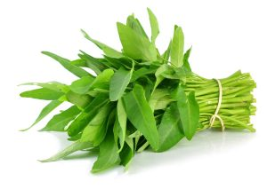

KANGKUNG
Manfaat
Tanaman Kangkung Cabut (Ipomea reptans P.) kaya akan vitamin A, C, B1, B2, zat besi, kalium, dan mineral yang baik untuk kesehatan mata sebab mampu melindungi kornea dan lapisan mata dari infeksi bakteri dan virus. Selain itu, tanaman kangkung juga dapat melawan peradangan akibat bakteri dan mencegah diabetes serta melawan kerusakan hati.
Tempat Tumbuh
Tanaman Kangkung Cabut (Ipomea reptans P.) tidak menghendaki tanah ang tergenang karena karnya akan mudah membusuk. Kangkung cabut baik tumbuh pada dataran rendah sampai daratan tinggi leih kurang 2000 dpl dengan curah hujan 500-5000 ml per tahun, suhu o C dan kelembaban.
TEKNIK BUDIDAYA
1. Pembibitan
Kangkung memerlukan lahan yang diolah dengan baik, dengan lebar bedengan 90 cm dan jarak antar bedengan 150 cm. Karena kangkung toleran terhadap genangan, maka bedengan yang dibuat boleh tidak terlalu tinggi.
Kangkung dapat ditanam dengan menanam benih langsung, melalui pemindahan atau menggunakan stek batang. Penanaman secara langsung dapat dilakukan bila jumlah benih cukup banyak, kurang tenaga. Benih disemai pada bedengan dengan larikan sedalam 1-1.5 cm, jarak antar larikan 15 - 20 cm dan dalam larikan 5 cm. Tutup benih dengan kompos. Bila sudah berdaun dua, kurangi tanaman dengan berjarak tanaman 10-15 cm. Secara komersial, kerapatan tanaman 50 000 tanaman/ha, diperlukan 5 kg/ha benih. Untuk cara penanaman dengan menyebar benih, pengurangan benih tidak perlu dilakukan. Benih yang diperlukan 5 – 10 kg/ha.
2. Persiapan Lahan
Sebaiknya menanam kangkung darat cabut lakukan di area persawahan biar terkena sinar matahari yang cukup dan usahakan jangan terlalu jauh dari perairan, lahan yang harus di persiapkan untuk kangkung yaitu: a) Lahan harus di cangkul terlebih dahulu; b) Buatlah bedengan persegi panjang; c) Bedengan di gembur dengan cangkul hingga merata dan halus, bersihkan semua rumuput-rumput liar di sekitar bedengan; d) Lebar lahan yang mau di buat minimal 30-40cm; e) Kedalaman lubang tanam sekitar 1 – 2 cm dan panjang bedengan sesuai dengan lahan masing-masing.
3. Penanaman
Penanaman kangkung cabut sebaiknya dilakukan pada saat musim hujan tiba. Kalaupun dilakukan pada musim kering, pastikan agar pengairan atau penyiraman dilakukan setiap hari. Penanaman kangkung diawali dengan membuat lubang tanam dengan kedalaman kurang lebih 5 cm dan jarak antar lubang sekitar 15-20 cm, masukkan 3 hingga 5 biji di setiap lubang. Kemudian tutup dengan tanah tipis yang sudah dicampur dengan pupuk NPK dan kandang. Penanaman dilakukan dengan teknik garitan atau zig-zag.
4. Pemeliharaan
Sebaiknya lakukanlah penyiraman setiap pagi dan sore penyiraman juga bisa di lakukan menurut cuaca, dan musim. Jika budidaya tanaman kangkung darat pada musim kemarau sebaiknya di lakukan penyiraman setiap hari. Dan apabila pada musim penghujan lakukanlan fermentasi dan selalu mengecek kondisi lahan, jika telalu banyak air yang mengedap akan mengakibatkan tanaman menjadi daunya layu, menguning dan mengakibatkan kematian. Dalam umur tanaman kangkung darat pada Usia setengah bulan pasti sudah banyak hama/mamalia.
5. Panen
Pemanenan tanaman kangkung darat bisa di lakukan setelah umur kangkung sudah mencapai usia 30-40 hari. Pemanenan juga bisa di lakukan dengan Dua cara yaitu; dengan di cabut atau di potong paling bawah batangnya.
Proses pemanenan juga bisa di lakukan dengan dua cara tersebut, tapi kalo menurut saya mendiing di potong saja batang pohonya kan masih bisa tumbuh lagi dan bisa di budidayakan kembali juga bisa mengurangi pengeluaran Uang untuk membeli bibit lagi.
Perlu anda ketahui kangkung darat juga bisa di lakukan pemanenan dalam sekali tanam 3 kali pemanenan lohh bahkan bisa lebih, Setelah panen pertama selesai anda hanya membutuhkan 5 – 7 hari saja Bisa memetik kembali kangkung kangkungnya.nah Oleh karena itu, setiap bulannya anda bisa panen sampai 6 kali Sedangkan kalo yang di cabut sampai akarnya cuma bisa menghasilkan proses pemanenanya cuma sesekali saja.